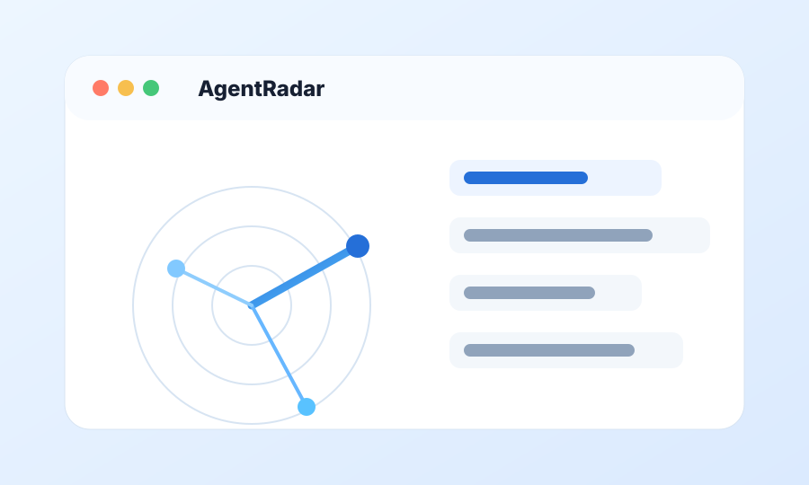

AgentRadar
面向 AI Agent 生态的开源趋势雷达，负责信号采集、项目评分、日报周报和知识卡沉淀。
TypeScript
React
AI Agent
Trend Radar
查看详情 ->

AI Agent 与 Agent Harness 方向开发者
擅长搜索推荐、候选召回、排序评分与可验证数据工作流
正在构建 AgentRadar：面向 AI Agent 生态的趋势雷达
Turning public AI Agent signals into ranked projects, weekly trend judgments, and reusable research artifacts.
Focusing on replayable runs, fixtures, schema checks, and quality gates for agentic workflows.
Working with candidate generation, ranking signals, freshness, and personalization as product-facing systems.
Explored Java tooling and data integration ecosystems through TubeMQ / InLong-related repositories.
Contact
如果你也在关注 AI Agent、Agent Harness、搜索推荐或数据产品，欢迎交流。